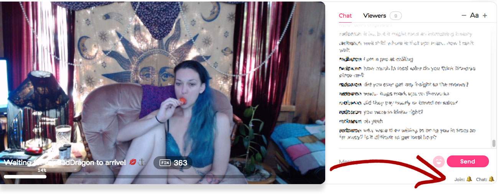

Featured model: RiverSunshine. Used with permission
This bookmarklet adds the following functionality to your stream channel on https://beta.spankchain.com:
- 🔔 New user notification sound: Play a bell sound when a new user enters the room. Click the bell emoji to toggle it off or on at any time 🔕 Default: on
- 🔔 New chat message notification sound: Play a subtle "click" sound when a user says something in your room. Click the bell emoji to toggle it off and on at any time 🔕 Default: off
- More features to come! Have a question or suggestion? Send me a tweet
Please note that I do not work for Spankchain and this is an unofficial plugin. I created this plugin for my own stream and wanted to share with others who are interested. Use at your own risk!
Files
- spankchain-addon.js🐓 - This is the actual uncompressed plugin. If you can read JavaScript or know someone who does, you can have them review it for safety. See installation instructions below.
Installation
Installation is different depending on what browser you use. Firefox is easy. Chrome is a little harder (I use Chrome). Once you do the initial setup, running the script is super easy: just click the bookmark in your toolbar after you've started your live stream.
- Firefox: Drag the following link into your bookmark bar: spankchain-addon.js🐓 You're done!
- Note that this is a compressed version of the script. For maximum safety you can take the original source above and compress it yourself here. Then drag it to your bookmarks bar for future use.
- Chrome has made it harder for you to add a bookmarklet to your bookmark bar as they got rid of dragging. The easiest way is to edit an existing bookmark (right click to edit) and paste in the following code into the URL field: link (contents opens in new page). Then you're good to go!
- Again, for maximum security you can make your own compressed version of the code using this page.
Usage
- After you start your cam session, click the link in your bookmark bar and it will activate!
- This plugin works for both Cammers and Moderators
Credits
Legal
© 2018 No copyright. Do what you want